| Image | Name | Type | Faction | Price (RP) | Magazine size | Fire rate (RPM) | Accuracy factor | Recoil | Recoil recovery | Kill probability | Fall-off Start(m) | Max range(m) | Bullet Speed(m/s) | Speed mod(%) | Commonness |
|---|---|---|---|---|---|---|---|---|---|---|---|---|---|---|---|
| M24A2 | Sniper rifle, bolt-action, 1.6x zoom | Greenbelts/
Unlockable |
4 | 10 | N/A | 1 | 3 | 0.55 | 1 | 99 | 144 | 180 | -7 | 0.01 (2.3%) | |
| 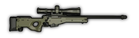 | PSG90 | Sniper rifle, bolt-action, 1.6x zoom | Graycollars/
Unlockable |
4 | 10 | N/A | 1 | 3 | 0.5 | 1 | 104.5 | 152 | 190 | -6 | 0.01 (2.3%) |
| 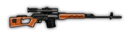 | Dragunov SVD | Sniper rifle, semi-auto, 1.45x zoom | Brownpants/
Unlockable |
4 | 10 | 80 | 1 | 3 | 0.87 | 0.9 | 101.8 | 129.5 | 185 | -4 | 0.01 (2.3%) |
| 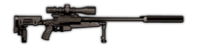 | APR | Sniper rifle, bolt-action,
1.45x zoom, suppressed |
Unlockable/
Lone Wolf |
25 | 5 | N/A | 1.0 | 3.0 | 0.7 | 0.85 | 78 | 120 | 160 | -9 | 0.00001 |
| 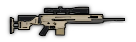 | SCAR SSR | Designated marksman rifle, semi-auto,
1.5x zoom |
Rare | 320 | 20 | 120 | 1 | 2 | 1 | 1.0 | 81.6 | 136 | 170 | -8 | 0.0002 |
| 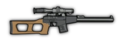 | VSS Vintorez | Designated marksman rifle, full-auto,
1.3x zoom, supressed |
Rare | 200 | 20 | 300 | 0.9 | 3 | 3 | 0.8 | 78 | 120 | 120 | -5 | 0.0002 |
| 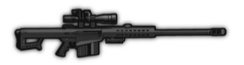 | Barrett M107 | Sniper rifle, semi-auto,
body-armor piercing, can crouch fire, 1.65x zoom |
Rare | 250 | 10 | 60 | 1 | 3 | 0.8 | 3.01 | 108 | 180 | 180 | -15 | 0.0001 |
| 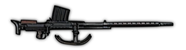 | Lahti L-39 | Sniper rifle, semi-auto,
explosive rounds, 1.35m radius, can pierce through bodies, 1.65x zoom |
Very rare | 1000 | 10 | 50 | 1 | 1 | 0.85 | 5xExplosive (20) | - | - | 160 | -17 | 0.000005 (0,00037%) |
| 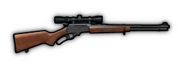 | M711-LA Enforcer | Designated marksman rifle, lever action,
can reload 1 round at a time, 1.3x zoom |
Gift Box | 330 | 8 | N/A | 1 | 2.5 | 0.9 | 1.2 | 50.7 | 80.6 | 130 | -8 | 0
(Found in Community Box 3) |
| 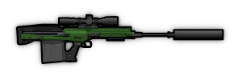 | M6Lynx | Sniper rifle, semi-auto, body-armor piercing,
1.65x zoom, suppressed |
Gift
Box/
Lone Wolf |
300 | 5 | 60 | 1 | 3.0 | 0.9 | 1.5 | 90 | 150 | 150 | -16 | 0.000001 and |
| 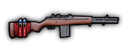 | M14k | Automatic marksman rifle, scopeless, but with optional stim-pack mode | Gift Box | 390 | 10 | 561 | 1 | 2.5 | 0.9 | 0.75 | 54 | 72 | 120 | -2 | 0 (Found in Community Box 5 and Pumpkin Box only) |
| 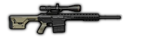 | FD338 | Semi-auto sniper rifle, 1.55x zoom, (optional supressor) | Gift Box | 338 | 10 | 200 (150) | 1 (0.95) | 2.4 (2.2) | 1.1 | 0.9 (0.8) | 93.6 (67.5) | 147.6 (112.5) | 180 (150) | -10 | 0 (Found in Community Box 4 and Pumpkin Box only) |
| 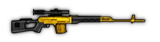 | GoldenDragunovSVD | Sniper rifle, shiny, semi-auto, 1.45x zoom | Gift Box | 3100 | 10 | 80 | 1 | 3 | 0.87 | 1 | 104.5 | 133 | 190 | -10 | 0 (Found in Titan Box and Pumpkin Box only) |
| 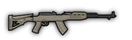 | SKS | Designated marksman rifle, semi-auto, 1.45x zoom, optional magazine with incendiary rounds
|
Gift Box | 400 | 20 (10) | 231 (286) | 1 (0.95) | 0.72 (1) | 1 | 0.85 (1) | 81.6 (50) | 127.5 (50) | 170 (100) | -4 | 0 |
| 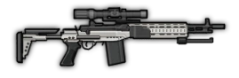 | M14EBR | Designated marksman rifle / battle rifle, with a full-auto Assault mode, semi-auto scoped
Marksman mode (stats in parenthesis), and prone/cover only Support mode [stats in brackets]
|
Gift Box | 314 | 15 (15) [50] | 300 (240) [545] | 0.98 (1.0) [0.98] | 2.0 (2.0) [2.0] | 1.5 (1.2) [1.5] | 0.8 (1.0) [0.6] | 78 (94.25) [52.8] | 120 (174) [88] | 120 (145) [110] | -5 (-5) [-7] | 0 |
| 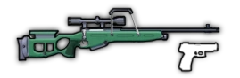 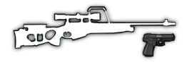 | SV98 &MP443 Grach | Two-for-one special; a bolt-action sniper rifle with a 1.6x scope, and a semi-automatic
pistol (stats in parenthesis)
|
Gift Box | 329 | 10 (17) | 60 (600) | 1.0 (0.95) | 3.0 (0.4) | 0.55 (1.0) | 1.0 (0.5) | 105 (35) | 148.75 (50) | 175 (100) | -10 (0) | 0 |
| 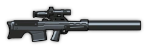 | VKS | Suppressed, bolt-action, bullpup sniper rifle with a 1.3x scope
|
Gift Box | 250 | 5 | 60 | 1.0 | 4.0 | 1.5 | 0.8 | 84 | 120 | 120 | -16 | 0 |